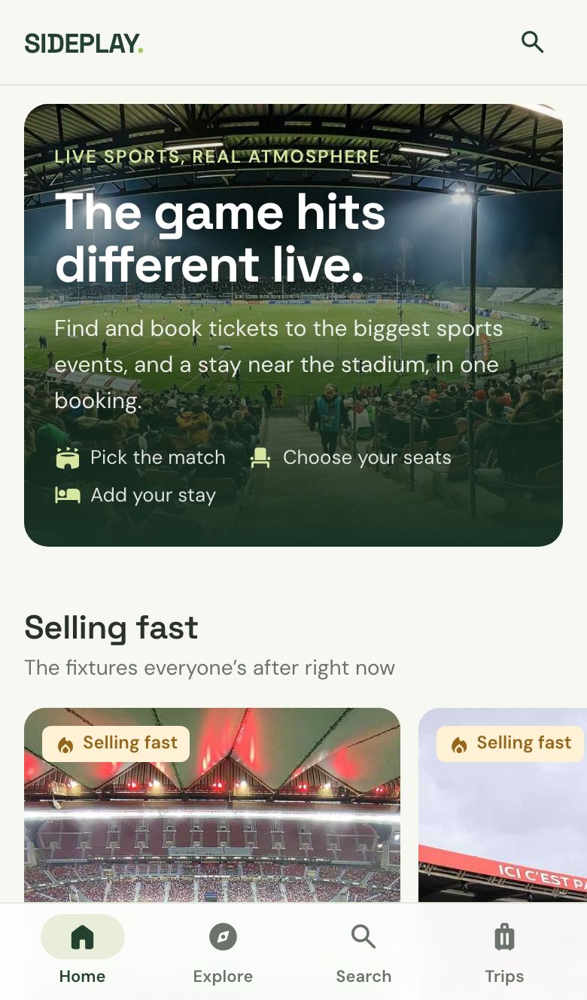
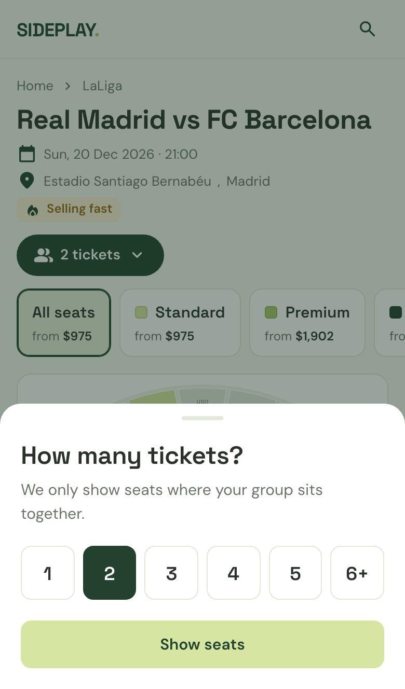
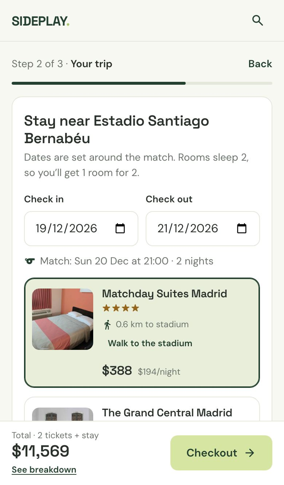
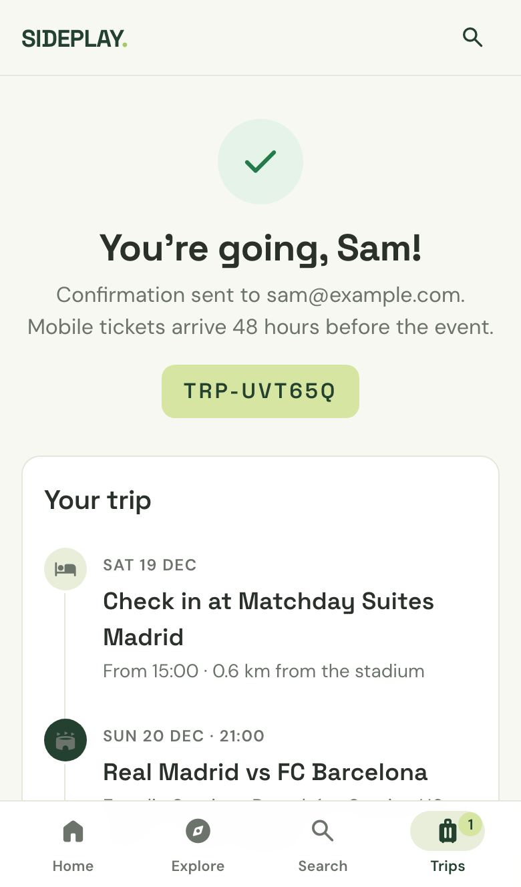

ProblemLuxury travellers want the whole trip arranged, but the match itself was booked somewhere else.
What I didMade the case, scoped sports-only, designed and built the frontend, launched in 6 weeks, fixed the biggest drop-off.
ResultLive with 2 clients. +20% more travellers reached booking review after the fix; 7% of them booked.
What I owned as Product Owner
Strategy
- Made the case for a sports vertical
- Defined the product hypothesis
Scope
- Sports only for release 1
- Deferred concerts and experiences
Research
- Benchmarked SeatGeek, viagogo, Seat Unique
- Decided what to adopt, skip, differentiate
UX & build
- Designed and prototyped the flow
- Built the frontend, AI-assisted
Risk
- Ticket delivery plan with suppliers
- Security reviews for ID data
Launch & iterate
- A/B tested entry points
- Shipped the fix, owns the roadmap
The match is often the reason for the trip
- The company works in luxury travel: clients expect the stay and the reason for the trip arranged together.
- Hotels were covered. Tickets were booked elsewhere, so the platform lost the start of the trip.
Hypothesis: if travellers can book the match and the stay in one place, the platform becomes where the trip starts, not just where the room is booked.
Research, prototype, ship, test
- Market researchBenchmarked how SeatGeek, viagogo and Seat Unique help buyers decide.
- Prototype iterationI designed the flow and iterated through clickable prototypes until fixture → seat → booking held up.
- Scope to sports onlyOne category first, to learn from one launch.
- Build & launchI built the frontend; 2 engineers integrated suppliers and backend. Live with client 1 in 6 weeks.
- A/B test entry pointsWhere the vertical sits in the client’s platform, to find what drives most traffic.
- Iterate, then client 2Fixed post-launch friction, then rolled out to a second client.
AdoptQuantity first, a seat map linked to the list, a simple value signal.
SkipResale mechanics. Our travellers buy to attend, not to trade.
DifferentiateNobody carries the buyer into the rest of the trip. A travel platform can.
One category first, on purpose
In release 1
- Sports tickets from 2 live suppliers
- Browse by sport, competition, team and city
- Seat selection and booking alongside the hotel
Deferred
- Concert and experience tickets
- Other live events
- A “book anything” platform
- Why: one clean launch to measure, and a template to expand from.
Five decisions that shaped the flow

01
Many ways in, one fixture list
- Problem
- Travellers start from a team, a competition or a city, and the vertical lives inside someone else’s platform.
- Decision
- Hub pages for sport, competition, team, venue and destination, on one template, all landing on the same fixture list.
- Evidence
- A/B tested entry points in client 1’s platform to find which drives the most traffic.

02
Group size first
- Problem
- Travellers come as couples, families or groups; split seats ruin the trip.
- Decision
- Ask how many tickets before showing seats; only seats the group can sit in together appear.
- Trade-off
- One extra tap before seeing seats, in exchange for no dead ends later.
03
Tiers first, map and list linked
- Problem
- Luxury travellers choose by experience before section numbers.
- Decision
- Standard, Premium and Hospitality up front; map and list stay in sync; total always visible.
- After launch
- Added a “More info” section on each ticket: +20% reached booking review.

04
The stay, planned around the match
- Problem
- Ticket sites stop at the ticket. Travellers then plan the stay somewhere else.
- Decision
- Dates and nearby hotels pre-filled from the fixture; tickets-only is one tap away.
- Why it matters
- This is the differentiator: the reason a travel platform should sell tickets at all.

05
A trip, not a receipt
- Problem
- A list of line items doesn’t tell you what happens when.
- Decision
- Confirmation laid out as the trip timeline: arrival, check-in, match, check-out.
- Next
- Share tickets with your group, then book together.
Two risks I managed
Ticket delivery
Many ticket types, two suppliers
- Decision: suppliers deliver directly at launch, the quickest safe path.
- Next: our own delivery pipeline.
Sensitive data
Passports and facial recognition
- Constraint: some tickets require ID.
- Mitigation: cleared multiple security reviews; approved data storage only.
The fix that moved the number
- Signal: heavy drop-off between choosing tickets and checkout.
- Cause: travellers had questions about the tickets the page didn’t answer.
- Fix: a “More info” section on each ticket, answering them in place.
+20%more travellers reached the booking review page, and 7% of them completed a booking
Working
The bundle lands
Travellers like sports tickets and hotels together. The hypothesis holds.
Problem
Price swings drive abandonment
Supplier prices move, so travellers leave to compare. In progress: more stable suppliers, broader sourcing.
Insight
Support is part of the product
High-value, time-sensitive bookings need customer support close by; its questions feed the backlog.
Lesson
Ship, then listen
Research alone wouldn’t have surfaced the ticket questions. Shipping in 6 weeks found them early.
Roadmap I’m driving
- Grow traffic: marketing, now that the journey converts better.
- Share tickets: send tickets to the people you’re travelling with.
- Book together: one person starts, invites the group; seats held while each adds their own details and ID.
- More categories: concerts and experiences, using sports as the template.
See the decisions in the product
The prototype has numbered product notes on every screen: the decision, the reason, and the result where there is one.
Try the prototype with product notes →